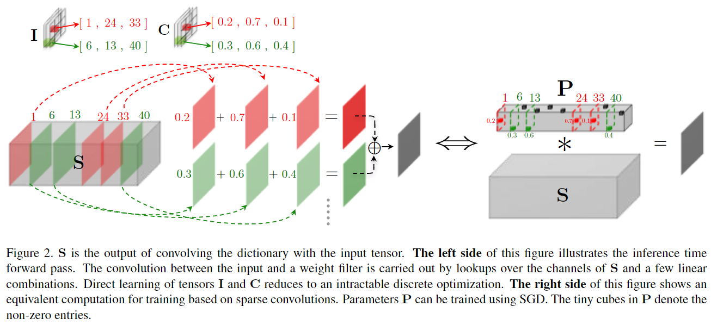

字典学习卷积模块以加速网络推理

论文：LCNN: Lookup-based Convolutional Neural Network
作者：Hessam Bagherinezhad, Mohammad Rastegari, Ali Farhadi
一作单位：University of Washington, XNOR.AI
录用情况：CVPR'2017
本文将卷积运算替换为学习一个字典和一组线性组合的权重，并提出了直接从头开始训练的方式，除了一般的分类实验，本文还证明了这种方法在few shot learning的提升，以及对网络初始迭代时收敛水平的提升等；在AlexNet的架构上的修改，该方法获得了55.1%的ImageNet top1准确率以及3.2倍的加速比；
方法
在不同卷积核之间、不同空间位置上建立共享的字典
本文将 \(n\) 个 \(m\times k_w\times k_h\) 的视为 \(nk_wk_h\) 个长度为 \(m\) 的向量，并希望学习一个的字典 \(D\in\mathbb{R}^{k\times m}\)，以及在每个 (t, r, c) 位置使用的 \(s\) 个字典向量索引 \(I_{[t,r,c]}\) 和对应的权重 \(C_{[t,r,c]}\)，从而能够将一个卷积 \(W\in \mathbb{R}^{m\times k_w\times k_h}\) 的 \(r\) 行 \(c\) 列的权重表示为如下字典向量的线性组合的形式：
\[ W_{[:, r, c]} = \sum_{t=1}^s C_{[t,r,c]} \cdot D_{[I_{[t,r,c]},:]} \quad \forall r, c \]
为了将这种表示下的卷积核应用到卷积计算中（在卷积运算中拆出 \(W_{[:, r, c]}\) 一项），作者从卷积核每个位置与输入做了怎样的运算的视角来看，整个卷积相当于输入与这些位置上卷积向量做1x1卷积后，经过位置相关的偏移操作，将结果求和；表达为如下形式：
\[ \begin{split} X*W &= \sum_{r,c}^{k_h, k_w}\operatorname{shift}_{r,c}(X * W_{[:, r, c]})\\ &= \sum_{r,c}^{k_h, k_w}\operatorname{shift}_{r,c}(X * (\sum_{t=1}^s C_{[t,r,c]} \cdot D_{[I_{[t,r,c]},:]}))\\ &= \sum_{r,c}^{k_h, k_w}\operatorname{shift}_{r,c}(\sum_{t=1}^s C_{[t,r,c]} (X * D_{[I_{[t,r,c]},:]}))\\ &= \sum_{r,c}^{k_h, k_w}\operatorname{shift}_{r,c}\left(\sum_{t=1}^s C_{[t,r,c]} S_{I_{[t,r,c]}}\right )\\ \end{split} \]
这意味着，对于共享同一个字典中的同一个层的所有卷积，我们可以先计算出 \(X\) 与字典中所有向量的1x1卷积结果 \(S_{[i,:,:]}=X*D_{i,:}\)，之后只需要索引到需要的结果，加权求和，放到需要的位置即可；
至此，只要 \(s\), \(k\) 设置得当，理论上计算量相比原来的卷积运算已经大大减少；
但是，我们关心的第一个问题是，如何将索引、加权和以及shift的过程向量化，从而极大地利用现有的高度并行化的算子，从而真正提升前向传播速度？
第二个问题是，在使用了向量化的算子之后，并应用了其默认的梯度下降优化，那么如何在优化过程中建立并保持稀疏性？ （\(s\ll k\)）
训练LCNN
利用如下事实：
假设 \(T\in \mathbb{R}^{k\times k_w\times k_h}\) 是独热张量，只在 \(T_{[t,r,c]}=1\)，其余位置均为0，那么有 \(S*T = \operatorname{shift}_{r,c}(S_{[t,:,:]})\)；
我们可以在前向传播过程中学习一个稀疏张量 \(P\in\mathbb{R}^{k\times w\times h}\)，其中，\(P_{[:,r,c]}\) 表示了在r,c位置的稀疏权重：
\[ P_{j,r,c} = \left \{ \begin{matrix} C_{t,r,c}, &\exists t: I_{t,r,c} = j\\ 0, &\text{otherwise} \end{matrix} \right . \]
这样一来，我们可以使用卷积来表示索引、加权和、偏移求和的过程，下式和图二说明了这一点：
\[ \begin{split} X*W &= \sum_{r,c}^{k_h, k_w}\operatorname{shift}_{r,c}\left(\sum_{t=1}^s C_{[t,r,c]} S_{I_{[t,r,c]}}\right )\\ &= \sum_{r,c}^{k_h, k_w}\operatorname{shift}_{r,c} (S * P_{[:,r,c]})\\ &= S*P \end{split} \]

并且，如果我们能够在训练时得到稀疏的 \(P\)，就可以通过寻找非零元素的方式得到 \(I\) 和 \(C\)，用于高效的推理；
接下来，作者通过添加正则项使得 \(P\) 稀疏，按照对 \(P\) 的定义，应该有 \(\lVert P_{[:,r,c]}\rVert _{\mathcal{L}_0} = s\)；但是 \(\mathcal{L}_0\) norm（非零元素的数量）是不连续的函数，不可导，因此作者将 \(P_{[:,r,c]}\) 的从大到小排列后，第 \(s\) 个之后的元素记为0，并计算 \(\mathcal{L}_1\) norm（元素绝对值之和）；期望通过将前 \(s\) 个元素的绝对值变小，来让被在zero out的那部分元素很接近0；
至此并没有完全达到稀疏化的目的，因为当 \(P_{[t,r,c]}\) 缩小到0时，其梯度不一定为0，这样在下一次迭代过程中其绝对值又会变大；
我们可以为 \(P\) 包裹一层阈值函数，当 \(|P_{[t,r,c]}|\) 的值小于 \(\epsilon\) 时，该位置直接置0，意味着回传的梯度也是0，那么这里就永远保持在0；
Few-shot learning
对于普通的CNN，将预训练的模型的分类头替换成没有任何先验知识的分类头（参数量很多，容易过拟合），对少样本的类别进行学习；
对于LCNN，可以使用预训练模型分类层的字典，因此只用学习权重和索引，且对于其他层，可以固定索引，只微调权重；
Few-iteration learning
浅层网络学习到的字典 \(D\in\mathbb{R}^{k\times m}\)，可以与通道数为 \(m\) 的深层网络共享；加速在段周期内的收敛过程；
实验
通过调整字典大小 \(k\)，正则化参数 \(\lambda\) 和阈值 \(\epsilon\) 来调整模型学习后的稀疏率，从而调整推理时加速比；
s 是间接调整的
每一层的阈值和正则化参数与该层初始化方差成正比，是为了让每层的系数水平相近；
对于第一层而言，由于输入通道是3通道的（字典向量长度为3）因此字典最多只需要3个向量（再多就一定有线性相关了）；
对于线性层，将其视为1x1卷积后，输入通道比较大，因此字典大小也很大；其他层的字典大小作者凭借经验设定一组候选值进行实验；
实验结果与分析详见原文；
总结
基于本文的工作，笔者有一些朴素的思考：
本文通过将传统卷积视为1x1卷积结果的shift和，认为这 \(nk_wk_h\) 个 \(\mathbb{R}^m\) 空间的卷积向量可以表示为 \(\mathbb{R}^k\) 子空间的坐标（字典向量是基，权重是坐标），该过程利用了输入 \(m\) 个通道的冗余性；接着，作者假设，这些坐标是稀疏的，每个坐标的非零元素不超过 \(s\) 个，这些利用的是 \(nk_wk_h\) 个向量的表示可以划分到 \(\begin{pmatrix} nk_wk_h\\s \end{pmatrix}\) 个簇中，这样一看，我们似乎可以找到一种从已经训练好的卷积核初始化字典的方法：
- 找到卷积核的低维投影（如PCA等）；
- 在低维空间使用聚类，并限制这些类中心坐标是稀疏的；
在此之前，需要验证一下本文得到的字典的秩是否为 \(k\)？关于2中提到的聚类中心坐标稀疏的限制如何实现？以及，我们是否可以换别的维度进行第1步的降维？
机器学习中有个经典方向：字典学习，笔者应该回去补一补了；